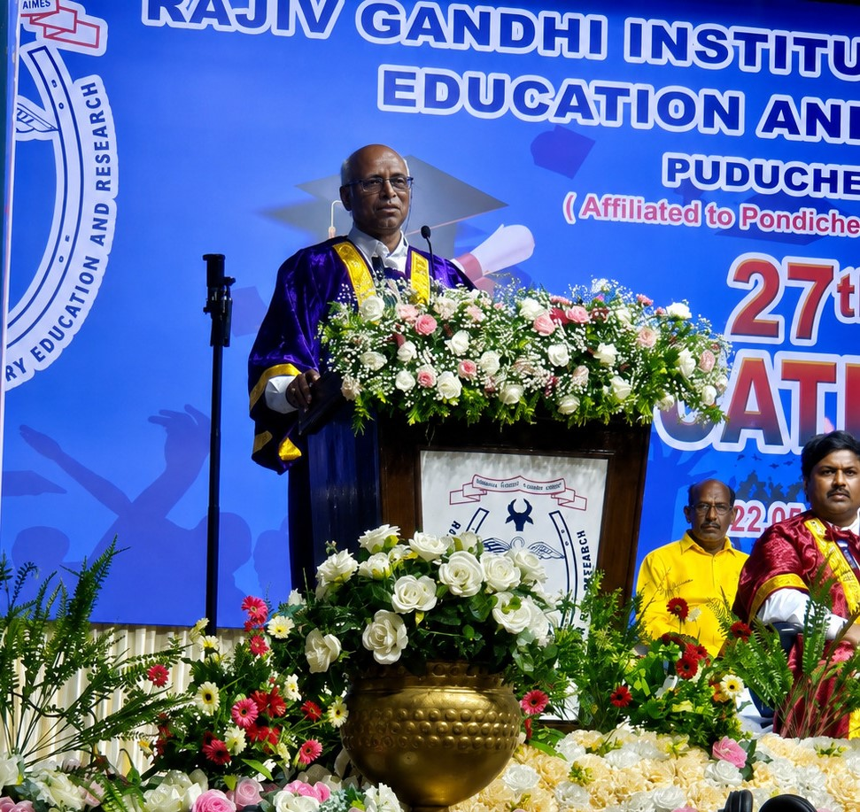
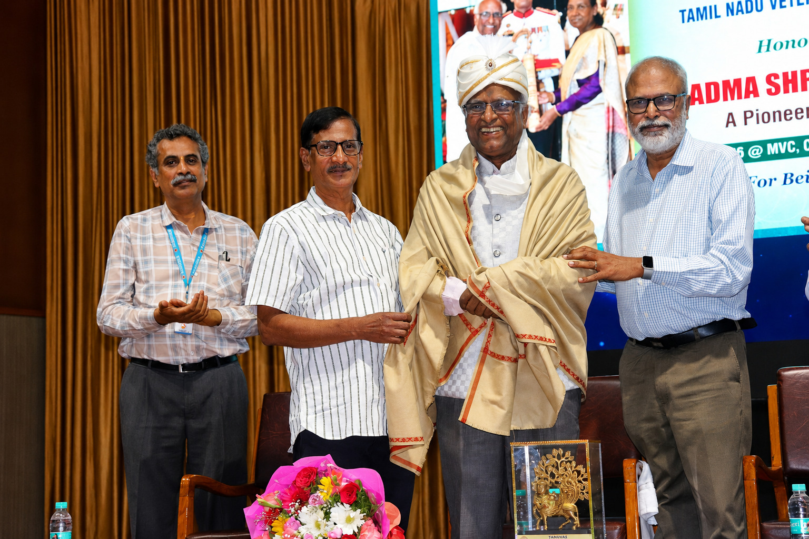

Inspiring the Next Generation of Veterinarians
Padma Shri Dr. N. Punniamurthy Delivers an Inspiring Graduation Day Address
Padma Shri Dr. N. Punniamurthy delivered an inspiring and thought-provoking address at the Graduation Day function held at the Rajiv Gandhi Institute of Veterinary Education and Research on 23 August 2026 .
His address highlighted the responsibilities of graduating veterinarians in serving society, safeguarding animal health, ensuring food security and contributing to sustainable agriculture . He emphasised continuous learning, professional ethics, compassion towards animals and the importance of maintaining strong connections with farmers and the community.

His message encouraged the young graduates to view veterinary medicine not merely as a profession, but as a noble service carrying immense social responsibility .
TTPA warmly congratulates Dr. Punniamurthy for his meaningful address, which undoubtedly encouraged the graduates to pursue their careers with commitment, integrity, empathy and dedication to the welfare of animals and humanity.
Padma Shri Dr. N. Punniamurthy Felicitated at His Alma Mater
Padma Shri Dr. N. Punniamurthy was felicitated at Madras Veterinary College, TANUVAS , in honour of receiving the Padma Shri for his pioneering contributions to ethno-veterinary medicine .
The programme served as both an alumni felicitation and an academic tribute recognising the conferment of this prestigious national honour. Several alumni, including former Vice-Chancellor Dr. P. Thangaraju , paid tribute to him. On behalf of the 1975 B.V.Sc. batch, he was honoured in a traditional manner.

The occasion celebrated his four-decade-long career in developing standardised herbal remedies for common cattle ailments, with emphasis on reducing antibiotic use and the cost of dairy production.
Addressing faculty, researchers and students, Dr. Punniamurthy spoke about integrating traditional herbal knowledge with rigorous clinical validation . The University community lauded his commitment to empowering rural farmers through sustainable livestock healthcare and for bringing national recognition to his alma mater.